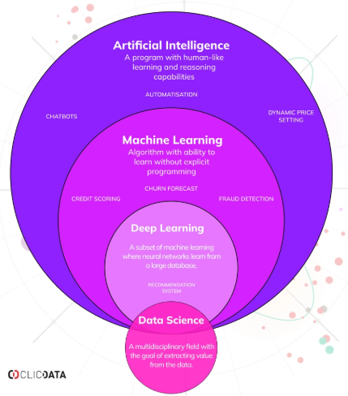

Data science plays a pivotal role in the development of artificial intelligence. By leveraging large datasets, data scientists can train machine learning models to make predictions and automate decision-making processes. This post explores how data science techniques are essential for building robust AI systems and the future implications of these advancements.
Recent studies have shown that AI algorithms can now outperform human doctors in diagnosing certain diseases, such as skin cancer, by analyzing images with unprecedented accuracy. This advancement highlights the potential of AI in transforming healthcare.
Data scientists are using AI to predict climate patterns and model the effects of climate change, helping policymakers make informed decisions regarding environmental strategies.
In conclusion, data science is an integral part of AI development, driving innovations that have the potential to revolutionize industries. As technology continues to advance, the collaboration between data scientists and AI will be crucial for unlocking even greater capabilities.